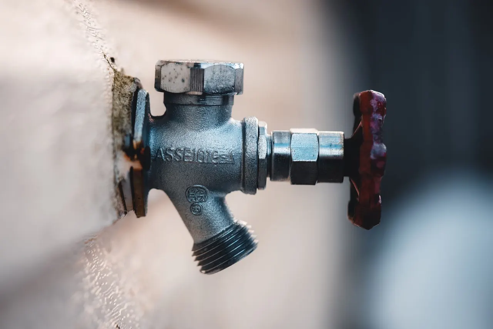
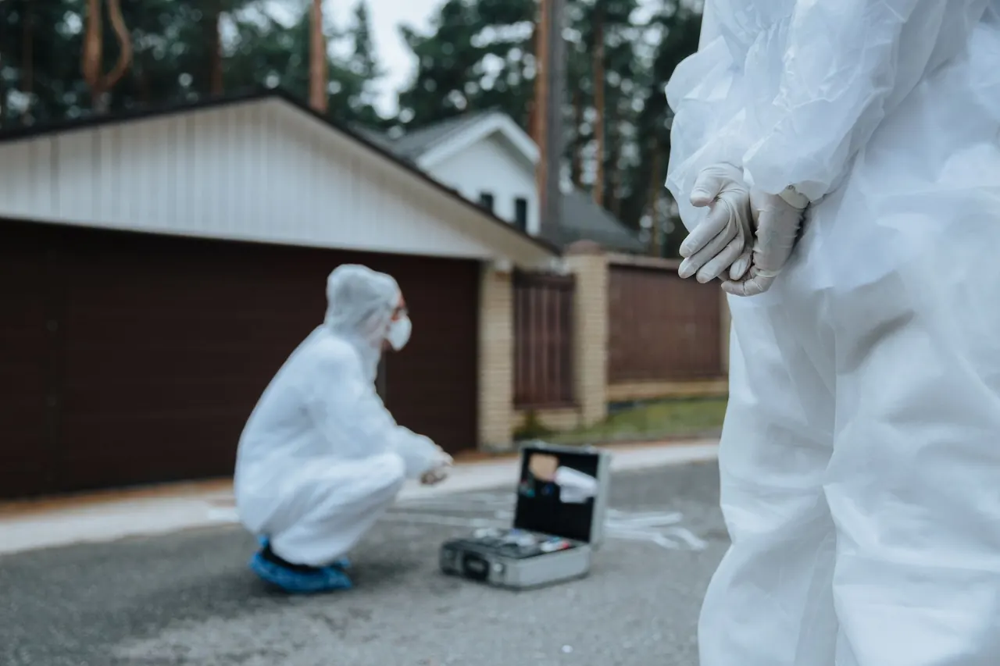
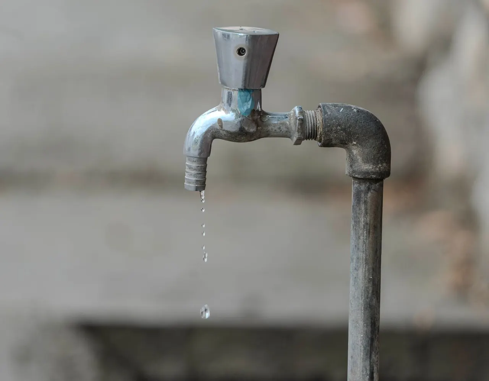

Slab Leak Detection
Slab Leak Detection in Redlands Stops Hidden Water Damage
Slab Leak Detection in Redlands is the fastest way to find water escaping under your foundation before it warps floors or inflates your water bill. We serve homeowners and property managers across Redlands, California, using acoustic listening gear and thermal imaging cameras to pinpoint the break within inches. If you have heard water running when nothing is on, call us today.
Service overview
What Slab Leak Detection in Redlands Actually Involves
Slab Leak Detection in Redlands is the process of locating water line failures buried beneath your concrete foundation using non-invasive tools. We pressurize the system, listen for the distinct hiss of escaping water with an acoustic leak detector, then confirm the hot zone with a thermal imaging camera. A moisture meter maps how far the water has traveled. Most homes here are built on post-tension or conventional slabs with copper pipe or PEX tubing running underneath, and both fail differently. Copper develops pinhole leaks after years of hard water exposure; PEX can fail at fittings. We identify which you have and where it is leaking before anyone cuts concrete.

Practical benefits
Why Redlands Homeowners Call Us First
A slab leak never fixes itself. The water keeps running, the damage keeps spreading, and the repair bill grows every week you wait. Here is what you get when you call us instead of guessing.
Stop Water Bill Bleeding
A slab leak can add $80 to $200 a month to your water bill in Redlands. We find the source in one visit, so you stop paying for water that never reaches a fixture. Most customers see their bill return to normal the first full cycle after repair.
Save Your Floors
Water under a slab wicks upward through concrete and destroys hardwood, tile adhesive, and carpet padding. Catching it early with Redlands slab leak detection services saves you thousands in flooring replacement. We have seen floors saved when the leak was found within two weeks of the first symptom.
Avoid Foundation Damage
Sustained moisture under a slab can cause soil expansion and cracking in San Bernardino County's clay-heavy soils. Fixing the leak removes the water source. We also check for secondary damage during the same visit so you know exactly what you are dealing with.
Same-Day Answers
We offer same-day slab leak detection Redlands CA appointments when you call before noon. You get a written report with the leak location, pipe material, and repair options. No waiting three days for a callback while water keeps running under your house.
How service works
Our Slab Leak Detection Process
Every job follows the same five steps. You know what is happening, what it costs, and how long it takes before we start cutting anything.
STEP 01
Phone Triage
We ask three questions: Is your water bill up? Do you hear running water with everything off? Are any floors warm or damp? Your answers tell us whether this is a slab leak or a fixture problem. Takes five minutes and saves you a diagnostic fee if it is something simpler.
Tools and methods
Tools and Methods We Use
Acoustic Leak Detector (RIDGID)
Listens for the specific frequency of water escaping under pressure. We use it to narrow the leak to a 12-inch radius on the slab surface before any demolition.
Thermal Imaging Camera (Fluke)
Detects temperature differences caused by hot water lines leaking under concrete. Cross-referencing thermal and acoustic hits gives us high-confidence location data.
Pressure Testing Kit
Isolates the domestic water system and pressurizes it to confirm a leak exists. Also used after repair to verify the fix holds before we close up the slab.
Moisture Meter (UEi)
Maps how far water has spread under flooring and into walls. Tells us whether the damage is contained or has reached adjacent rooms.
Video Pipe Inspection Camera (General Pipe Cleaners)
Checks sewer and drain lines when the leak pattern does not match a supply line break. Rules out root intrusion and cracked sewer pipe under the slab.
Tracer Gas Leak Detector (Sewerin)
Used for hard-to-find leaks where acoustic and thermal methods disagree. We introduce a safe tracer gas into the line and track where it escapes.
Pressure Isolation Testing
We shut off every fixture and irrigation zone, then pressurize the domestic system to 80 psi. A pressure drop over 15 minutes confirms a leak. This method rules out false alarms before we start scanning.
Acoustic Correlation
Two sensors placed on the slab surface pick up the leak sound at slightly different times. The system calculates the exact distance to the leak based on that difference. We use it on long runs where a single microphone is not precise enough.
Thermal Mapping
We walk the entire slab with a Fluke camera and record temperature anomalies. Hot water leaks show as warm streaks; cold line leaks show as cool spots. The map guides where we place acoustic sensors for confirmation.
Rerouting in PEX
For many slab leaks, the smart repair is abandoning the failed section and running new PEX tubing through the attic or walls. This avoids breaking finished floors and eliminates the risk of a second leak in the same copper run.
Where this service fits
When Redlands Homeowners Call Us
You got a water bill over $200 and cannot find a running toilet or dripping faucet anywhere in the house.
We run a full pressure test and acoustic scan to confirm whether the loss is under the slab or in the irrigation system. Most mystery bill spikes in Redlands turn out to be slab leaks or pool line leaks. You get a definitive answer in one visit and a repair plan with pricing. No more guessing, no more overpaying the water district.
Your home was built in the 1960s and still has original copper pipe under the slab. You have heard a faint hiss at night.
Copper in Redlands' hard water develops pinhole leaks after 40 to 50 years. We locate the pinhole with acoustic gear and offer either a direct repair or a full reroute in PEX to prevent the next one. You fix the current leak and get a realistic picture of how much life is left in the rest of the copper. No surprise second leak six months later.
You are selling your Redlands home and the buyer's inspector flagged a possible slab leak based on a warm floor spot.
We perform a detection visit and provide a written report with photos and pressure test results. If there is a leak, we quote the repair. If there is not, you have documentation to satisfy the buyer. The sale moves forward without a renegotiation based on speculation. You either fix it before closing or prove it is not leaking.
A tenant in your North Redlands rental reports water coming up through the vinyl plank flooring in the hallway.
We coordinate access with the tenant, detect the leak, and handle the repair. You get a written report and invoice formatted for your property records and insurance. The tenant stays, the flooring damage is contained, and you have documentation for your taxes and insurance. Most rental slab leaks are resolved within two days.
Local execution
How Slab Leak Detection Works in Redlands
Redlands sits on clay-heavy soil that expands when wet and shrinks when dry. That movement stresses buried pipes, especially older copper lines in homes built before 1980. Add hard water with high mineral content, and copper develops pinhole leaks faster here than in softer-water cities. Most of our slab leak calls come from Downtown Redlands and North Redlands, where the housing stock ranges from 1920s bungalows to 1990s tracts. Summer heat pushes water demand up, which raises system pressure and makes existing leaks worse. We see a spike in calls from July through September. Winter rain saturates the soil and can shift the slab, causing new leaks at fitting joints. If you need slab leak repair in Redlands California 24/7, we run emergency calls year-round. Our technicians know the common pipe layouts in each neighborhood and can often predict where the leak is before we arrive. We also coordinate with San Bernardino County building inspectors when a repair requires a permit.
Problems we solve
Slab Leak Problems We Solve in Redlands
A slab leak shows up in different ways depending on your pipe material and home age. Here are the most common problems we get called for in Redlands and what happens if you ignore them.
Water bill doubled with no change in usage
We pressure-test the system, confirm the leak with acoustic and thermal tools, and pinpoint the break. Most customers see their bill return to normal the first full billing cycle after repair. You are paying for water that is soaking into the soil under your foundation. Over three months, that can add $300 to $600 to your bills and start shifting the slab.
Warm spot on the floor near a bathroom or kitchen
We confirm the hot water line with thermal imaging, locate the break, and offer rerouting through the attic to avoid tearing up your finished floor. Most reroutes finish in one day. A hot water line is leaking under the slab. The heat warps hardwood, loosens tile, and can crack the slab if the soil expands. Ignoring it for a month usually means replacing flooring.
Sound of running water when everything is off
Call us and we will be there same-day for active leaks. We locate the break, shut down the affected line, and complete the repair with a pressure test before we leave. This is the classic slab leak signature. Water is escaping under pressure and will keep running until you shut off the main or fix the line. Every day adds to the damage.
Damp carpet or buckling baseboards in a hallway
We map the moisture spread with a meter, find the source, and repair the line. We also tell you exactly which materials need drying or replacement so you can call your insurance with confidence. Water has traveled from the leak point to the edge of the room. Carpet padding molds within 48 hours. Baseboards swell and need replacement. The longer it sits, the more you replace.

Need help?+19097294657
A practical standard for every visit.
Clear planningPrepared arrivalsCareful workLocal follow-through
Experience in the details
Six Years Finding Leaks in Redlands
Leak Detection Redlands CA has been locating and repairing slab leaks since 2020. In six years we have completed more than 1,400 leak detection jobs across San Bernardino County, from 1920s bungalows in Downtown Redlands to new builds in North Redlands. Our technicians hold California Contractor License (C-36 Plumbing) credentials and train on Fluke thermal cameras, RIDGID acoustic locators, and Sewerin tracer gas detectors. We stay current on IAPMO and ASSE standards for leak detection and backflow prevention. Every technician carries EPA WaterSense training for water conservation diagnostics.

Where we work
One local team. A lot of ground covered.
Notes from local customers
What Redlands Customers Say
Our water bill jumped from $90 to $240 in two months. I called three plumbers and two wanted to jackhammer the whole hallway. These guys used a thermal camera and found the leak under the kitchen in 40 minutes. They rerouted the line through the attic and we never lost a tile. Bill is back to normal.
I manage six rentals in 92374 and have used Leak Detection Redlands CA on three slab leaks since 2020. They give me a written report with photos every time, which keeps my owners calm. Last job was a copper pinhole leak under a tenant's bedroom. Fixed in one day, no drama, fair price.
I heard water running at 11 p.m. with everything off. They answered the phone, had a tech here in about an hour, and shut the water off that night. Came back the next morning to do the full detection and repair. Warm spot on the floor matched exactly where they said it would be. Solid work.
Before the visit
Frequently Asked Questions About Slab Leak Detection in Redlands
Still wondering?+19097294657
Detection runs $250 to $450 for most Redlands homes in 2026. That covers the on-site visit, acoustic and thermal scanning, and a written report with the leak location. If you proceed with the repair through us, we credit the detection fee toward the total. Larger homes over 3,000 square feet or with multiple wet walls may run slightly higher.
We do. Leak Detection Redlands CA handles both detection and repair, so you are not bouncing between two contractors. We hold a C-36 Plumbing license and carry the insurance required for slab work in San Bernardino County. One call gets you from diagnosis to a pressure-tested repair.
Most homeowner policies in Redlands cover the resulting damage, like ruined flooring or drywall, but not the pipe repair itself. Some carriers offer a limited water backup or hidden leak endorsement. We provide photos, a written report, and a line-item invoice formatted for claims. Call your adjuster before we start if you plan to file.
Shut off every fixture, then check your water meter. If the low-flow dial still spins, you have a leak. Listen at the floor for a hiss, feel for warm spots, and look for unexplained moisture at baseboards. Those signs mean it is time to call a pro. Our acoustic and thermal tools confirm the exact spot in under an hour.
Keep exploring
Other Leak Detection Services We Offer
Your next step is waiting
Get Slab Leak Detection in Redlands Today
Water under your slab gets worse every day. We answer the phone 24/7 and can be at your door within 90 minutes for active leaks. Call now and we will find it, fix it, and test it before we leave. Licensed, insured, and warrantied.
Start with the basics
Call Us for Leak Detection
Reach us at +19097294657 any time, day or night. We answer live, ask a few questions about what you are seeing, and get a tech headed your way. Most Redlands calls get a same-day slot, and emergencies get dispatched right away. You can also email info@leakdetectionredlandsca.com with photos of the damage.